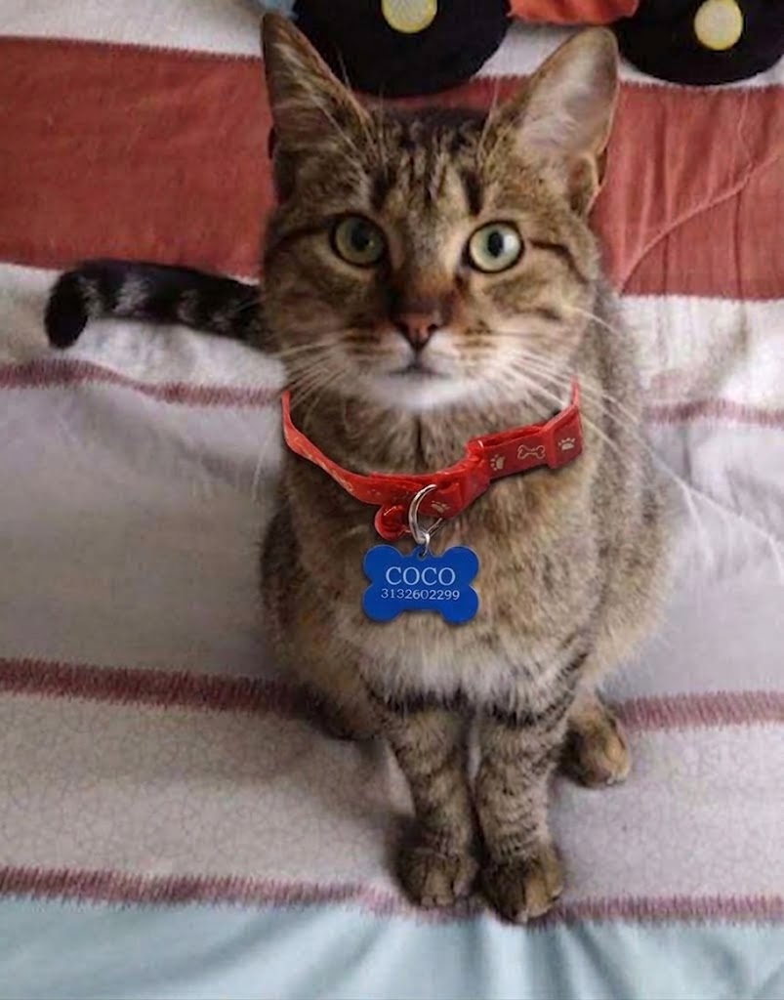

Mascota Encontrada

Nombre: Coco
Raza: Atrigado
Color: Atigrado
Edad: 4 años
Dueño: Sergio Quintero
Dirección Aproximada: Portal de Usme
Medicamentos Necesarios: Pretnisolona (Media pastilla diaria)